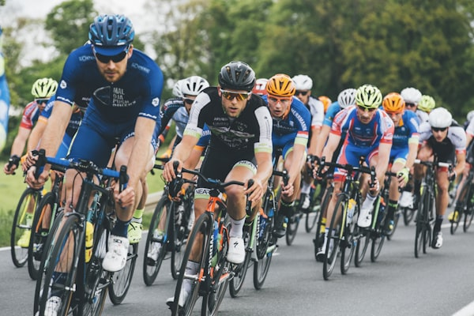

Caring for a Child with Clubfoot: A Parent's Guide to the Ponseti Method
The Ponseti Method is the gold standard for clubfoot treatment, consisting of weekly serial cas...
Empowering parents with clinically verified information on child skeletal development, posture habits, and orthopedic conditions.
Read detailed articles written by Dr. Ayesha Saeed to help monitor your child's bone health, recognize early signs, and understand recovery processes.
The Ponseti Method is the gold standard for clubfoot treatment, consisting of weekly serial cas...
Many parents worry when they notice their toddler walking with their knees curved outward. In m...

Flat feet are one of the most common reasons parents visit a pediatric orthopedic surgeon. Ther...
Scoliosis, or sideways curvature of the spine, is most common during the rapid growth spurt in ...
Rickets is a bone-softening disease that leads to bowed legs, growth delays, and skeletal pain....
Children are not miniature adults. Their bones contain a fragile cartilage area called the grow...
How your child sits on the floor during play can have a significant impact on their physical de...
As children grow, their bones often grow faster than their muscles and tendons, leading to temp...
With children spending more time on tablets, smartphones, and computers, pediatric orthopedists...
Watching your baby take their first steps is a major milestone. However, if your child is not w...
Swaddling is an ancient practice that helps soothe infants. However, evidence shows that tradit...
A broken bone is a stressful event for both the child and parents. However, children's bones po...

Sports are excellent for a child's health and social development. However, intense training sch...
It is common for children to complain of leg pain, particularly in the evening or after active ...
If you have a child showing skeletal symptoms that are not covered in our blog, you can consult Dr. Ayesha directly or visit one of our hospital locations.
Thank you for placing your trust in Dr. Ayesha Saeed. Our clinic coordinator will contact you shortly via WhatsApp or call to finalize your slot.